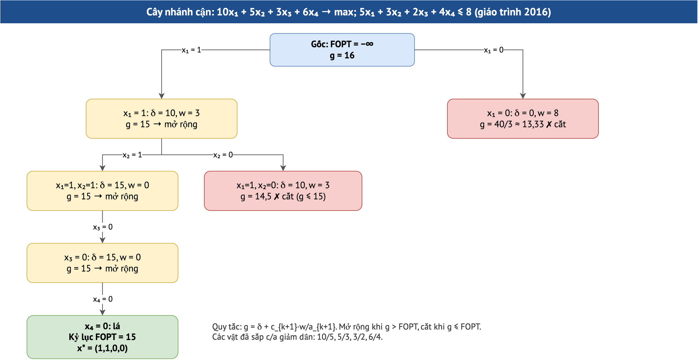

Module 12. Duyệt toàn bộ và nhánh cận: bài toán cái túi
Duyệt toàn bộ, hàm cận g, nhánh cận, cái túi 0/1 và biến nguyên
Môn: Toán rời rạc 1 (INT1358)Giáo trình 2016 §4.1–4.3 · Đề cương INT1358 mục 4.2–4.3 · Slide chương Tối ưuĐề thi: Câu 5 mọi đề (2017–2024)Thời lượng gợi ý: ≈ 3 giờ106 câu trắc nghiệm (106 câu gốc) · 52 bài tự luận (52 gốc)
- Chạy duyệt toàn bộ và nhánh cận cho cái túi 0/1
- Tính đúng δ, w, g ở từng nút
- Cắt nhánh đúng quy tắc g ≤ FOPT
- Trình bày kết quả theo từng bước như đề yêu cầu
Bài giảng dạng slide
Dùng phím ← → hoặc các nút; bấm “Toàn màn hình” để trình chiếu. Mỗi slide có khung “Giải thích cho người mới bắt đầu”.
Sơ đồ minh họa

1. Nội dung chi tiết
Nhánh cận là quay lui có kiểm tra cận. Giáo trình 2016 chứng minh mệnh đề: với c₁/a₁ ≥ … ≥ cₙ/aₙ, phương án tối ưu của bài toán biến liên tục là x₁ = b/a₁, còn lại 0, giá trị c₁b/a₁; từ đó suy ra cận g cho phương án bộ phận.
2. Ví dụ chi tiết có lời giải
9x₁ + x₂ + 5x₃ + x₄ → max; 7x₁ + 2x₂ + 4x₃ + x₄ ≤ 8: bảng nhánh cận và kết quả:
Sắp xếp theo c/a giảm dần: x₁ (9/7 = 1.29), x₃ (5/4 = 1.25), x₄ (1/1 = 1.00), x₂ (1/2 = 0.50).
Ký hiệu nút: (x…) | δ = giá trị đã chọn | w = trọng lượng còn lại | g = δ + c_{k+1}·w/a_{k+1}.
Gốc: FOPT = −∞, g = 72/7 ≈ 10.29.
(1) | δ = 9, w = 1, g = 41/4 ≈ 10.25 → mở rộng (g > FOPT)
(1, 0) | δ = 9, w = 1, g = 10 → mở rộng (g > FOPT)
(1, 0, 1) | δ = 10, w = 0, g = 10 → mở rộng (g > FOPT)
(1, 0, 1, 0) | δ = 10, w = 0, g = 10 ★ cập nhật kỷ lục
(1, 0, 0) | δ = 9, w = 1, g = 19/2 ≈ 9.50 ✗ cắt (g ≤ FOPT)
(0) | δ = 0, w = 8, g = 10 ✗ cắt (g ≤ FOPT)
Kết quả: f* = 10, x* = (1, 0, 0, 1) (theo thứ tự biến gốc x₁…x_4).Sắp xếp theo c/a giảm dần: x₁ (6/4 = 1.50), x₃ (3/2 = 1.50), x₂ (5/4 = 1.25), x₄ (1/1 = 1.00).
Ký hiệu nút: (x…) | δ = giá trị đã chọn | w = trọng lượng còn lại | g = δ + c_{k+1}·w/a_{k+1}.
Lưu ý: có tỉ số c/a bằng nhau; giữ thứ tự theo chỉ số biến (kết quả tối ưu không đổi).
Gốc: FOPT = −∞, g = 27/2 ≈ 13.50.
(1) | δ = 6, w = 5, g = 27/2 ≈ 13.50 → mở rộng (g > FOPT)
(1, 1) | δ = 9, w = 3, g = 51/4 ≈ 12.75 → mở rộng (g > FOPT)
(1, 1, 0) | δ = 9, w = 3, g = 12 → mở rộng (g > FOPT)
(1, 1, 0, 1) | δ = 10, w = 2, g = 10 ★ cập nhật kỷ lục
(1, 1, 0, 0) | δ = 9, w = 3, g = 9 lá, không cải thiện
(1, 0) | δ = 6, w = 5, g = 49/4 ≈ 12.25 → mở rộng (g > FOPT)
(1, 0, 1) | δ = 11, w = 1, g = 12 → mở rộng (g > FOPT)
(1, 0, 1, 1) | δ = 12, w = 0, g = 12 ★ cập nhật kỷ lục
(1, 0, 1, 0) | δ = 11, w = 1, g = 11 lá, không cải thiện
(1, 0, 0) | δ = 6, w = 5, g = 11 ✗ cắt (g ≤ FOPT)
(0) | δ = 0, w = 9, g = 27/2 ≈ 13.50 → mở rộng (g > FOPT)
(0, 1) | δ = 3, w = 7, g = 47/4 ≈ 11.75 ✗ cắt (g ≤ FOPT)
(0, 0) | δ = 0, w = 9, g = 45/4 ≈ 11.25 ✗ cắt (g ≤ FOPT)
Kết quả: f* = 12, x* = (1, 1, 0, 1) (theo thứ tự biến gốc x₁…x_4).Sắp xếp theo c/a giảm dần: x₁ (5/3 = 1.67), x₄ (8/5 = 1.60), x₃ (3/2 = 1.50), x₂ (5/4 = 1.25).
Ký hiệu nút: (x…) | δ = giá trị đã chọn | w = trọng lượng còn lại | g = δ + c_{k+1}·w/a_{k+1}.
Gốc: FOPT = −∞, g = 20.
(1) | δ = 5, w = 9, g = 97/5 ≈ 19.40 → mở rộng (g > FOPT)
(1, 1) | δ = 13, w = 4, g = 19 → mở rộng (g > FOPT)
(1, 1, 1) | δ = 16, w = 2, g = 37/2 ≈ 18.50 → mở rộng (g > FOPT)
(1, 1, 1, 0) | δ = 16, w = 2, g = 16 ★ cập nhật kỷ lục
(1, 1, 0) | δ = 13, w = 4, g = 18 → mở rộng (g > FOPT)
(1, 1, 0, 1) | δ = 18, w = 0, g = 18 ★ cập nhật kỷ lục
(1, 1, 0, 0) | δ = 13, w = 4, g = 13 lá, không cải thiện
(1, 0) | δ = 5, w = 9, g = 37/2 ≈ 18.50 → mở rộng (g > FOPT)
(1, 0, 1) | δ = 8, w = 7, g = 67/4 ≈ 16.75 ✗ cắt (g ≤ FOPT)
(1, 0, 0) | δ = 5, w = 9, g = 65/4 ≈ 16.25 ✗ cắt (g ≤ FOPT)
(0) | δ = 0, w = 12, g = 96/5 ≈ 19.20 → mở rộng (g > FOPT)
(0, 1) | δ = 8, w = 7, g = 37/2 ≈ 18.50 → mở rộng (g > FOPT)
(0, 1, 1) | δ = 11, w = 5, g = 69/4 ≈ 17.25 ✗ cắt (g ≤ FOPT)
(0, 1, 0) | δ = 8, w = 7, g = 67/4 ≈ 16.75 ✗ cắt (g ≤ FOPT)
(0, 0) | δ = 0, w = 12, g = 18 ✗ cắt (g ≤ FOPT)
Kết quả: f* = 18, x* = (1, 1, 0, 1) (theo thứ tự biến gốc x₁…x_4).Sắp xếp theo c/a giảm dần: x₁ (7/4 = 1.75), x₂ (4/3 = 1.33), x₃ (2/2 = 1.00).
Ký hiệu nút: (x…) | δ = giá trị đã chọn | w = trọng lượng còn lại | g = δ + c_{k+1}·w/a_{k+1}.
Gốc: FOPT = −∞, g = 21/2 ≈ 10.50.
(1) | δ = 7, w = 2, g = 29/3 ≈ 9.67 → mở rộng (g > FOPT)
(1, 0) | δ = 7, w = 2, g = 9 → mở rộng (g > FOPT)
(1, 0, 1) | δ = 9, w = 0, g = 9 ★ cập nhật kỷ lục
(1, 0, 0) | δ = 7, w = 2, g = 7 lá, không cải thiện
(0) | δ = 0, w = 6, g = 8 ✗ cắt (g ≤ FOPT)
Kết quả: f* = 9, x* = (1, 0, 1) (theo thứ tự biến gốc x₁…x_3).Đề 02 (2023–2024) có hai vật cùng tỉ số c/a = 1,5 (x₁ = 6/4 và x₃ = 3/2): ta giữ thứ tự chỉ số. Kết quả tối ưu không phụ thuộc thứ tự, nhưng cây tìm kiếm có thể khác; giám khảo chấp nhận mọi thứ tự hợp lệ khi f* đúng.
3. Thực hành tương tác
Nhập c, a, b (tối đa 8 vật); công cụ in bảng nút, đối chiếu duyệt toàn bộ.
4. Bối cảnh lý thuyết và lịch sử
5. Case study
Chọn tính năng cho một bản phát hành với ngân sách 20 điểm công: mỗi tính năng có giá trị kinh doanh cⱼ và chi phí aⱼ. Sắp theo c/a, nhánh cận loại nhanh các tổ hợp kém; với 30 tính năng vét cạn cần 2³⁰ ≈ 10⁹ tổ hợp, nhánh cận thường chỉ xét hàng nghìn nút.
6. Bẫy khi làm bài
• Chỉ rõ thứ tự biến sau khi sắp và ánh xạ lại thành x₁…xₙ gốc ở kết quả.
• Với duyệt toàn bộ: bảng đủ 2ⁿ dòng, đánh dấu phương án bị loại.
Tự kiểm tra nhanh (10 câu, đổi bộ được)
Mỗi lần rút 10 câu từ kho của module. Bấm đáp án để chấm ngay; mọi câu đều có giải thích; có nút làm lại từng câu, đổi bộ câu hỏi, và kết quả được ghi vào Sổ lỗi & ôn tập.